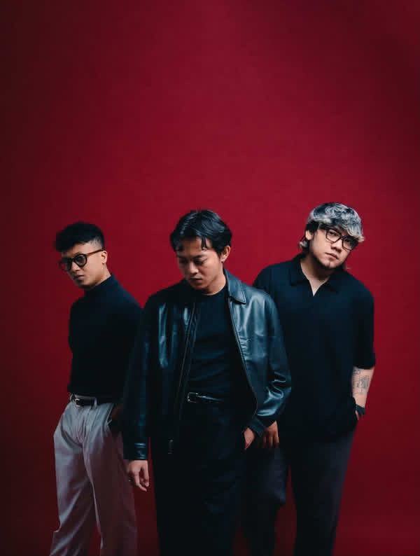

510 special experience
HLTC x
Rock from Indonesia
HLTC x
......
Satu track dalam atmosfer 510—gelap, berani, dan penuh tenaga. Tekan play, naikkan volume, lalu biarkan distorsi berbicara.

510ROCK / INDONESIA
FIVE
TEN
TEN
♪
♫
Dengarkan sekarang
Rilisan pilihan
HLTC x ......
510 • Special track
2026
0:56
Tidak ada lagu yang cocok.
Know the band
Tiga kepala.
Satu suara besar.
510 adalah trio rock Indonesia yang membangun musiknya dari cerita perjalanan manusia. Album debut ORIGIN bergerak di antara alternative rock, metal, pop, dan sentuhan klasik.
01Faizal PermanaVokal
02Pras GSGitar
03Winaldy SennaDrum / Producer
DEBUT ALBUM
ORIGIN
2023 · ROCK
ALIVE / MAMA / RE-MINE / CALLOUT
Foto 510 oleh Aqilla Rahmi · CC BY-SA 4.0